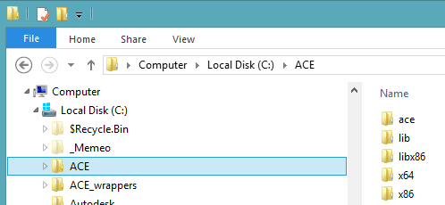

ACE provides abstractions for sockets, demultiplexing loops, threads, synchronization primitives and can be used in high-performance, distributed real-time
and embedded systems. ACE customers are Boeing and NASA, Facebook and Intel also use the framework - just a very short list of many ACE customers.
TAO is an implementation of CORBA Object Request Broker (ORB).
References:
There is little information about ACE on the Internet and the 3 books to learn the framework are over ten years old, despite the fact the framework is still actively maintained. The framework is large, over 2 million lines of code, and it takes an effort to learn how to use it. The solution that I provide here has several projects, each introducing to some of the concepts of the framework for network programming. I did not go into other capabilities the framework provides such as multithreading, shared memory management, service configuration, timers, etc. My interest was strictly in how to use it to abstract sockets. I hope it will make it easier for some of you to expand on my samples.
Trace samples show how to instrument your code to output configurable debug, trace, or error messages. Server samples show how to build server TCP endpoints to listen for Client requests. Any of the clients work with any of the servers. To launch a project, right-click on it and select Debug -> Start new instance.
The following image shows server and client talking to each other.
Udp projects demonstrate unicast, broadcast, and multicast support by ACE framework. Here's a UDP dgram receiver example
void EchoDatagram()
{
ACE_INET_Addr listener(27015, ACE_LOCALHOST);
ACE_INET_Addr sender;
ACE_SOCK_DGRAM udp(listener);
char buffer[BUFSIZ];
size_t size = sizeof(buffer);
cout << "waiting for a udp datagram." << endl;
ssize_t received = udp.recv(buffer, size, sender);
if (received > 0)
{
udp.send(buffer, size, sender);
}
udp.close();
cout << "received: " << received << " bytes" << endl;
}
int ACE_TMAIN(int, ACE_TCHAR*[])
{
EchoDatagram();
return 0;
}
void EchoDatagram() { ACE_INET_Addr listener(27015, ACE_LOCALHOST); ACE_INET_Addr sender; ACE_SOCK_DGRAM udp(listener); char buffer[BUFSIZ]; size_t size = sizeof(buffer); cout << "waiting for a udp datagram." << endl; ssize_t received = udp.recv(buffer, size, sender); if (received > 0) { udp.send(buffer, size, sender); } udp.close(); cout << "received: " << received << " bytes" << endl; } int ACE_TMAIN(int, ACE_TCHAR*[]) { EchoDatagram(); return 0; }
int SendDatagram()
{
const char* message = "this is a message!\n";
ACE_INET_Addr sender (27016, ACE_LOCALHOST);
ACE_INET_Addr listener (27015, ACE_LOCALHOST);
ACE_SOCK_DGRAM udp (sender);
ssize_t sent = udp.send(message, ACE_OS_String::strlen(message) + 1, listener);
char buffer[BUFSIZ];
size_t size = sizeof(buffer);
ssize_t received = udp.recv(buffer, size, listener);
udp.close();
if (sent == -1)
{
ACE_ERROR_RETURN((LM_ERROR, ACE_TEXT("%p\n"), ACE_TEXT("send")), -1);
}
cout << "sent: " << sent << " bytes" << endl;
cout << "received: " << received << " bytes" << endl;
return 0;
}
int ACE_TMAIN(int, ACE_TCHAR*[])
{
int hr = SendDatagram();
return hr;
}
int SendDatagram() { const char* message = "this is a message!\n"; ACE_INET_Addr sender (27016, ACE_LOCALHOST); ACE_INET_Addr listener (27015, ACE_LOCALHOST); ACE_SOCK_DGRAM udp (sender); ssize_t sent = udp.send(message, ACE_OS_String::strlen(message) + 1, listener); char buffer[BUFSIZ]; size_t size = sizeof(buffer); ssize_t received = udp.recv(buffer, size, listener); udp.close(); if (sent == -1) { ACE_ERROR_RETURN((LM_ERROR, ACE_TEXT("%p\n"), ACE_TEXT("send")), -1); } cout << "sent: " << sent << " bytes" << endl; cout << "received: " << received << " bytes" << endl; return 0; } int ACE_TMAIN(int, ACE_TCHAR*[]) { int hr = SendDatagram(); return hr; }
#if _DEBUG #pragma comment(lib, "aced") #else #pragma comment(lib, "ace") #endif
#if _DEBUG #pragma comment(lib, "aced") #else #pragma comment(lib, "ace") #endif
Following code example shows simple variants of trace macros:
int ACE_TMAIN(int, ACE_TCHAR*[])
{
ACE_TRACE(ACE_TEXT("main"));
ACE_DEBUG((LM_INFO, ACE_TEXT("%IHi Mom\n")));
foo();
ACE_DEBUG((LM_INFO, ACE_TEXT("%IGoodnight\n")));
return 0;
}
void foo()
{
ACE_TRACE(ACE_TEXT("foo"));
ACE_DEBUG((LM_INFO, ACE_TEXT("%IHowdy Partner\n")));
}
int ACE_TMAIN(int, ACE_TCHAR*[]) { ACE_TRACE(ACE_TEXT("main")); ACE_DEBUG((LM_INFO, ACE_TEXT("%IHi Mom\n"))); foo(); ACE_DEBUG((LM_INFO, ACE_TEXT("%IGoodnight\n"))); return 0; } void foo() { ACE_TRACE(ACE_TEXT("foo")); ACE_DEBUG((LM_INFO, ACE_TEXT("%IHowdy Partner\n"))); }
ACE server using reactor pattern can be written with just a few lines:
int ACE_TMAIN(int, ACE_TCHAR*[])
{
ACE_INET_Addr listenAddress(27015, ACE_LOCALHOST);
// Subscribe to events on a specific port
ClientAcceptor acceptor;
acceptor.reactor(ACE_Reactor::instance()); // Needed with ClientAcceptor
int hr = acceptor.open(listenAddress);
if (hr == -1)
{
return 1;
}
cout << "Listening for incoming connections..." << endl;
ACE_Reactor::instance()->run_reactor_event_loop();
return 0;
}
int ACE_TMAIN(int, ACE_TCHAR*[]) { ACE_INET_Addr listenAddress(27015, ACE_LOCALHOST); // Subscribe to events on a specific port ClientAcceptor acceptor; acceptor.reactor(ACE_Reactor::instance()); // Needed with ClientAcceptor int hr = acceptor.open(listenAddress); if (hr == -1) { return 1; } cout << "Listening for incoming connections..." << endl; ACE_Reactor::instance()->run_reactor_event_loop(); return 0; }
I used 6.1.8 version of the framework, where stable versions are x.x.0 and work in progress has last number non-zero and could have bugs consequently. Download does not have binaries, you have to build them yourself. This is a big framework and the task takes time to accomplish. To simplify, I provided all required include, library and dll files in the ace.zip archive shown below.
If you build the library yourself you should extract the framework into ace_wrappers folder. If you use file that I provide in the ace.zip file you can place them anywhere, I copied them to c:\ace folder shown below.

The drill is the same as for any framework: dll's from x64 folder should be copied to system32 or you can create an environment variable for them. You have to create an environment variable for the ace (or ace_wrappers) folder. You can do it using powershell with the following command:
[environment]::SetEnvironmentVariable("ACE_ROOT", "Machine", "c:\ace")
[environment]::SetEnvironmentVariable("ACE_ROOT", "Machine", "c:\ace")
That's how ace folder structure will look after all is done, where c:\ace\ace folder contains all includes.
Modify Visual Studio C++ directories and you are ready to run the code: